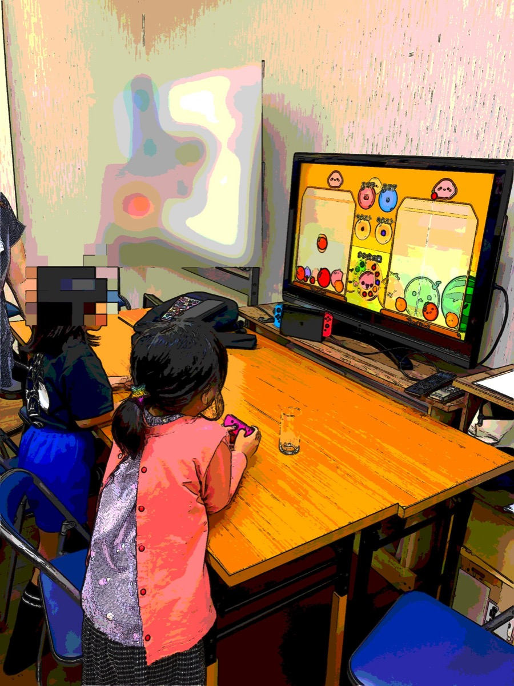

6月27日（土）、夜の「ふれあい交流会」を開催しました。子育て世代や現役世代の方にも気軽に集まってもらえる場をつくりたい、という思いで企画したイベントです。参加してくださった皆さん、本当にありがとうございました。
実は今年5月に「ふれあい交流酒場」という名前でプレ開催をさせてもらっていました。その時の手応えを受けて、より幅広い方に参加していただけるよう「ふれあい交流会」と名前を変えて、今回あらためて第1回として開催した、という経緯があります。

テーブルを囲んで、和やかな雰囲気で交流できました
まだまだ参加人数は少ないですが、こうした集まりは少しずつ広がっていけばいいなと思っています。今回も町会に加入されていない方に参加していただきました。こうした機会を通じて、町会への理解が深まり、「堅苦しい」というイメージが少しでも和らいで、いつか加入につながってくれたら嬉しいです。
参加してくださった皆さんに、アンケートへご協力いただきました。いただいた声の一部をご紹介します。
「とても満足」「満足」という声をいただき、「また参加したい」「機会があれば参加したい」と多くの方が答えてくださいました。新しい人と話せた、子どもが楽しめた、という声がとくに嬉しかったです。
盛り上がってきた20時ごろ、ふと気づくと「お腹が減ったね」という空気に。急きょ、私がマクドナルドへ買い出しに走りました（笑）。
子どもたちにはテレビゲーム（マリオカート大会）が人気でしたが、よく見るとゲームをしない子・苦手な子もいました。アンケートでも「マリオカート以外で、トランプなど数人で遊べるものがあると楽しめる」という声をいただきました。

ゲームに夢中の子どもたち。みんな真剣です
たとえば、昔ながらのトランプ。みんなでワイワイできて、世代を問わず楽しめます。あるいはパソコンを持ち込んで、今流行りのタイピングゲーム「寿司打（すしだ）」なんかもアリかもしれません。お寿司が流れてくる前にキーボードを打つゲームで、子どもも大人も夢中になれそうです。
初めての夜の交流会、最初から完璧にとはいきませんでしたが、実際にやってみたからこそ見えてきたことがたくさんありました。「次はこうしよう」というアイデアが、参加者の皆さんの声から自然と生まれてくるのが、何より嬉しいことです。
地域のつながりは、こうした小さな集まりの積み重ねから生まれていくのだと思います。町会に入っている方も、まだの方も、世代を問わず気軽に集える場所に育てていきたい。次回はもっと楽しい会にできるよう、いただいた声を大切に準備していきます。またのご参加、お待ちしています!